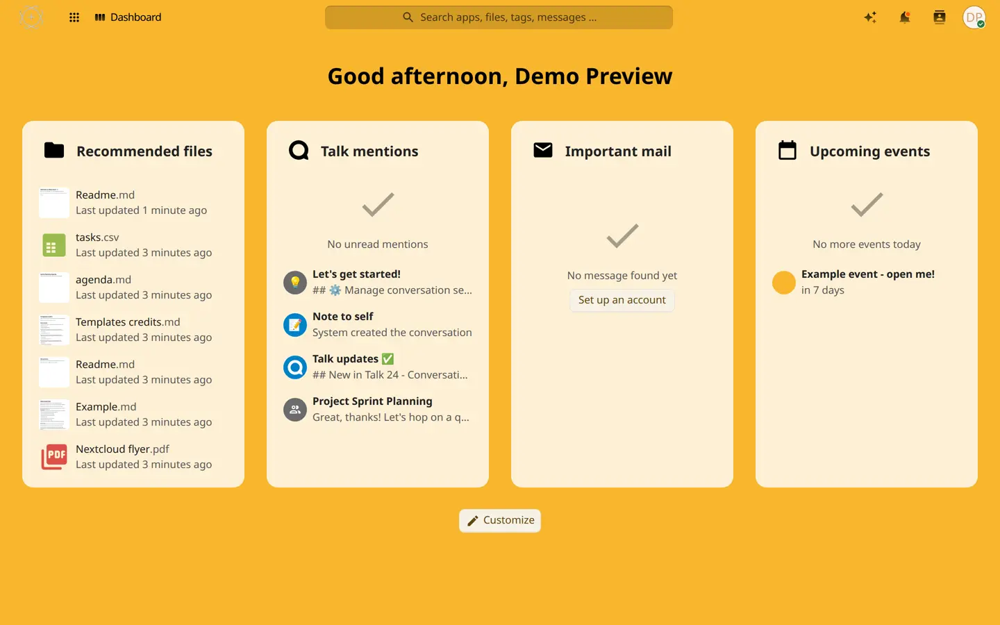
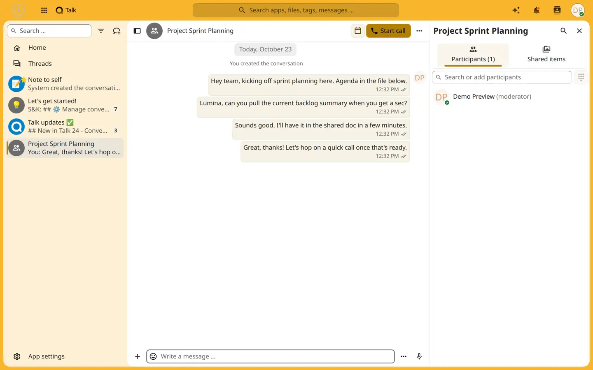
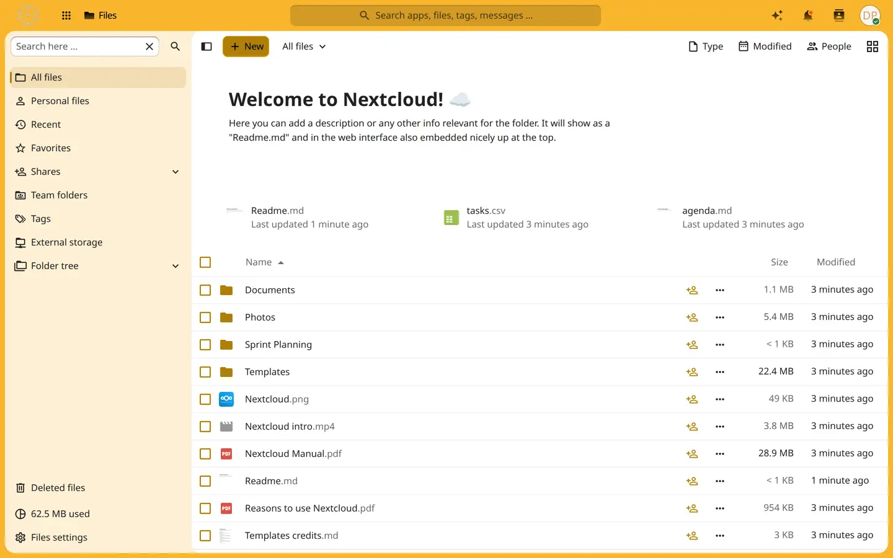
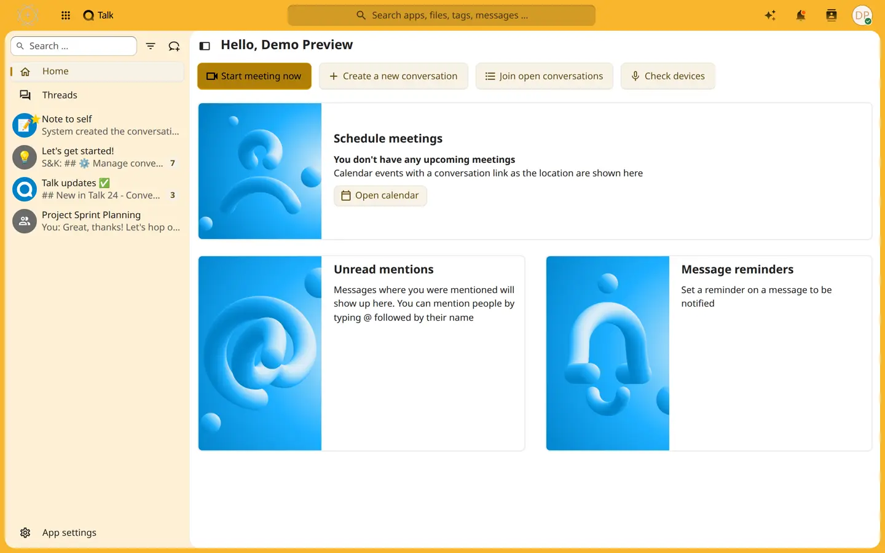
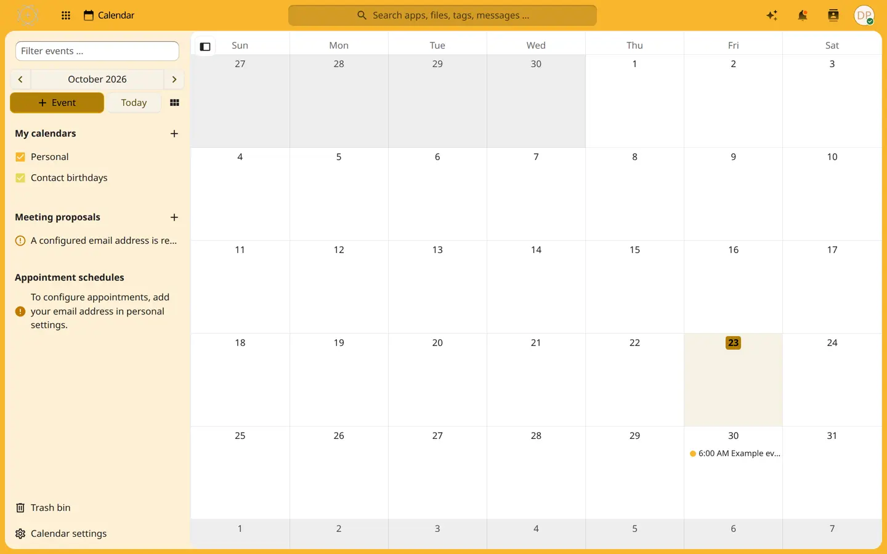
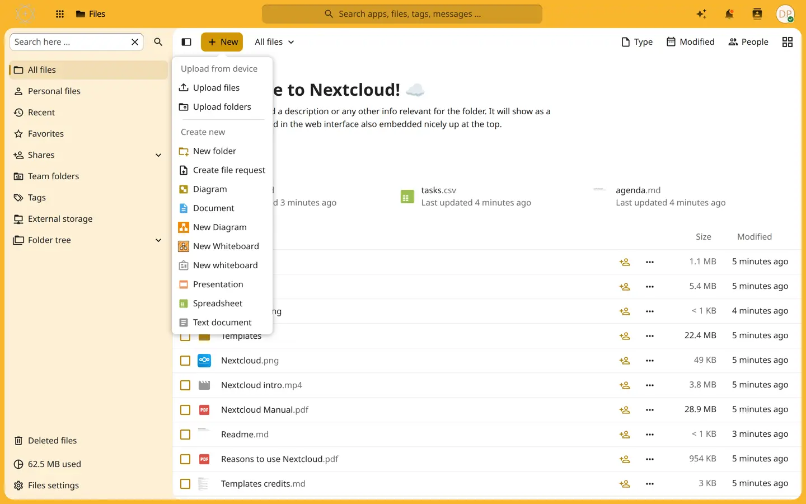

skhub is SKWorld's self-hosted collaboration hub: a hardened, pinned Nextcloud deployment for a sovereign fleet, where AI agents sit in chat and on calls as real teammates, not bolted-on bots. No third-party collaboration SaaS, no surprise cloud dependency, every setting checked into version control.
skhub is the deployment role (optional/skhub) inside SKStacks, SKWorld's Ansible + Docker Swarm sovereign infrastructure framework. It stands up a self-hosted Nextcloud instance, pinned by SHA-256 digest end to end, so the fleet gets its own files, chat, video calls, and office documents without handing any of it to a collaboration SaaS vendor.
Pinned nextcloud:31.0.14, backed by MariaDB 10.11.19 and Redis 8.10.2-alpine.
ClamAV antivirus on uploads, a dedicated cron service, and notify_push for live, no-poll notifications.
Collaborative whiteboard (backend v2.0.0) and imaginary for fast image preview generation.
Optional real-time collaborative document editing, Word/Excel/PowerPoint-compatible, right in the browser (26.04.5.1.1).
Optional Nextcloud Talk High Performance Backend (aio-talk): Janus WebRTC signaling plus an eturnal STUN/TURN relay, for group chat and video calls.
Shared NFS by default, or point it at an external S3-compatible store, or at the fleet's own in-cluster Garage service (skstor) as a one-line shortcut.
Every image is pinned by digest, never a bare tag, and every setting comes from a per-environment vault file, never hardcoded into the playbook.
skhub is a real, running Nextcloud instance, not a mockup. Here is what it actually looks like.






The point of skhub is not just that your files live somewhere you control. It is that your AI agents can work alongside you there, the same way a human teammate would: reading a shared folder, joining a conversation, picking up an @mention, sitting quietly in a room until something is actually worth saying.
That is built on hermes-nextcloud-talk, a Nextcloud Talk connector for Hermes Agent that we built and contributed upstream (merged into Hermes's own plugin catalog, PR #140445). It ships as one plugin with two independent connector modes, so you pick the integration style that fits each agent.
| Mode | What the agent looks like | Good for |
|---|---|---|
| Bot | No personal account. Talk's own signed Bot API (HMAC-SHA256 both directions); a moderator opts a room in with occ talk:bot:setup. | A clean, no-account integration, opt-in per room, with an inbound webhook listener. |
| User | A genuine Nextcloud account with an app password, long-polling the Chat REST API like any human client. | DMs, invites into any room, and federation across estates, with no inbound port exposed at all. |
Either way, a room can run in one of three modes: mention (reply only when @mentioned, the default), watch (read every message, speak only when something is actually worth saying), or free (reply to everything, for a room dedicated to that agent). DMs always run in free mode in user mode, since there is no third party in the room to stay quiet in front of.
Your agents show up with their own name and avatar, a typing indicator while they work, and an 👀 reaction the moment they pick up a mention, the same social cues a human teammate gives. Lumina (the fleet's assistant agent) and Jarvis (its terminal-side agent) are two examples running this way today, each with their own curated set of tools and their own account, invited into exactly the rooms they need to be in.
Talk federation lets two separate skhub instances, each with its own Talk HPB, exchange chat, reactions, and calls over the OCM protocol, group-restricted and opt-in on each side. An agent on one estate's skhub can be invited into a federated room on another estate's skhub, and the adapter auto-accepts an invitation only from an explicitly allow-listed inviter; every other invite is left pending for a human to look at, never auto-declined, never silently accepted.
occ talk:bot:install with a generated secret. User: a dedicated Nextcloud account plus an app password from Settings → Security.NEXTCLOUD_TALK_SECRET/NEXTCLOUD_TALK_BASE_URL for bot mode, or NEXTCLOUD_TALK_SERVER_URL/NEXTCLOUD_TALK_APP_PASSWORD for user mode); the plugin picks the mode automatically from which credential is set.skhub is not "Nextcloud with defaults." It is Nextcloud run the way a sovereign fleet actually needs it run, with the rough edges found and fixed under real load, not assumed away.
user_oidc app against the fleet's Authentik instance (sksso), with automatic group mapping, a documented deprovisioning path, and a break-glass local login for recovery. Automation keeps local app passwords, never an SSO identity.db-backup sidecar dumps the database on a fixed wall-clock schedule (DST-correct), rather than drifting with whenever the container last restarted, so backups land at a predictable time every night and the retention window is known, not guessed.--single-transaction --quick) landed with a dedicated regression test the same cycle it was found. A separate incident had Nextcloud's first install crash-looping on a busy host because the container healthcheck's grace period was shorter than the install itself was allowed to take; same pattern, same day, fixed and tested.With the optional Talk HPB enabled, Nextcloud Talk gets its own TURN/STUN relay (eturnal), so calls work from outside the local network, not just inside it. A TLS-over-443 fallback keeps calls working on networks that block the raw TURN port, and port sizing follows a simple rule of thumb: roughly 2 x N² relay ports for an N-person call outside the LAN.
| Capability | Detail |
|---|---|
| Relay | eturnal STUN/TURN, for calls reaching beyond the local network |
| Fallback | TLS over 443, for networks that block the raw TURN port |
| Recording | A dedicated talk-recording service, CPU/memory tunable per instance |
| AI transcription | Nextcloud's Assistant (speech-to-text) wired through skgateway to the operator's own self-hosted model, never a hardcoded cloud model id, off by default |
| Federation | Chat, reactions, and calls federate over OCM between two skhub instances, each using its own HPB |
| File sharing | Does not federate through Talk; handled through standard Nextcloud federated shares instead |
We have already proven an agent joining a live call with real-time voice, not canned audio: barge-in (the agent stops talking the instant you start), a spoken "working on it" filler while it looks something up, a live listening/thinking/speaking state, and a rendered avatar video track confirmed in a real browser. That proof of concept runs today on SKWorld's LiveKit-based conferencing surface. The next step is wiring that same agent-in-the-call capability into skhub's own Nextcloud Talk, so an agent can pick up a Talk call the same way it already picks up a Talk chat. This is not generally available yet. It is actively rolling out; this page will update the moment it ships in skhub.
skhub is the fleet's "files, chat, video, docs" layer, and it is built to sit next to the rest of the stack rather than stand alone: the fleet's own matter engine (skwrit), its own workflow engine (skflow, built on Windmill), its own SSO (sksso, Authentik), and its own local-inference gateway (skgateway).
Drafting with quality gates, an independent review step, and a release step, publishing straight into skhub, with a re-download check that confirms the published copy matches what was sent.
A dedicated background-job worker handles webhook delivery for Nextcloud's webhook_listeners app. Without it, a webhook waits for the next 5-minute cron cycle; with it, delivery has been measured at about 4 seconds on a live instance.
That fast delivery is what makes skhub useful as a trigger for the fleet's workflow engine: a file landing, a chat message, or a call can kick off a workflow almost immediately instead of minutes later.
Nextcloud's built-in Assistant (chat, summarize, rewrite, translate, speech-to-text) runs against the operator's own self-hosted models through skgateway's model aliases. Image generation and cloud TTS are left disabled rather than silently falling back to a cloud default.
skhub deploys through a standard Ansible playbook (deploy_skhub-<env>.yml) run per environment, dev, staging, prod, with every setting coming from a per-environment vault file. New capability is release-gated by the skstack06 lab harness before it is considered released, an evidenced practice with real bugs caught, not an aspirational claim.
skhub holds the files, the chat, and the calls. skwrit is the matter engine that turns taught processes into verified, published paperwork, and publishes its finished documents straight into skhub. sksec is the edge layer standing in front of it. All three are part of SKWorld, the sovereign AI ecosystem where you own the whole stack, from silicon to soul.